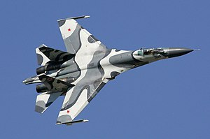
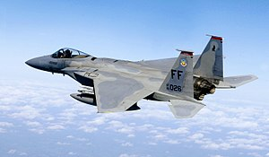
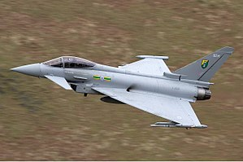

Aircrafts
Su-27

The Sukhoi Su-27 (Russian: Сухой Су-27; NATO reporting name: Flanker) is a twin-engine supermaneuverable fighter aircraft designed by Sukhoi. It was intended as a direct competitor for the large United States fourth-generation fighters such as the Grumman F-14 Tomcat and F-15 Eagle, with 3,530-kilometre (1,910 nmi) range, heavy aircraft ordnance, sophisticated avionics and high maneuverability. The Su-27 was designed for air superiority missions, and subsequent variants are able to perform almost all aerial warfare operations. It was designed with the Mikoyan MiG-29 as its complement.
(End of Su-27 section) Back to top
F-15

The McDonnell Douglas F-15 Eagle is an American twin-engined, all-weather tactical fighter aircraft designed by McDonnell Douglas (now Boeing) to gain and maintain air supremacy in all aspects of aerial combat. Following reviews of proposals, the United States Air Force selected McDonnell Douglas' design in 1967 to meet the service's need for a dedicated air-superiority fighter. The Eagle first flew in July 1972, and entered service in 1976. It is among the most successful modern fighters, with over 100 victories and no losses in aerial combat, with the majority of the kills by the Israeli Air Force.
(End of F-15 section) Back to top
Typhoon

The Eurofighter Typhoon is a twin-engine, canard-delta wing, multirole fighter. The Typhoon was designed originally as an air superiority fighter and is manufactured by a consortium of Airbus, BAE Systems and Leonardo that conducts the majority of the project through a joint holding company, Eurofighter Jagdflugzeug GmbH formed in 1986. NATO Eurofighter and Tornado Management Agency manages the project and is the prime customer.
(End of Typhoon section) Back to top